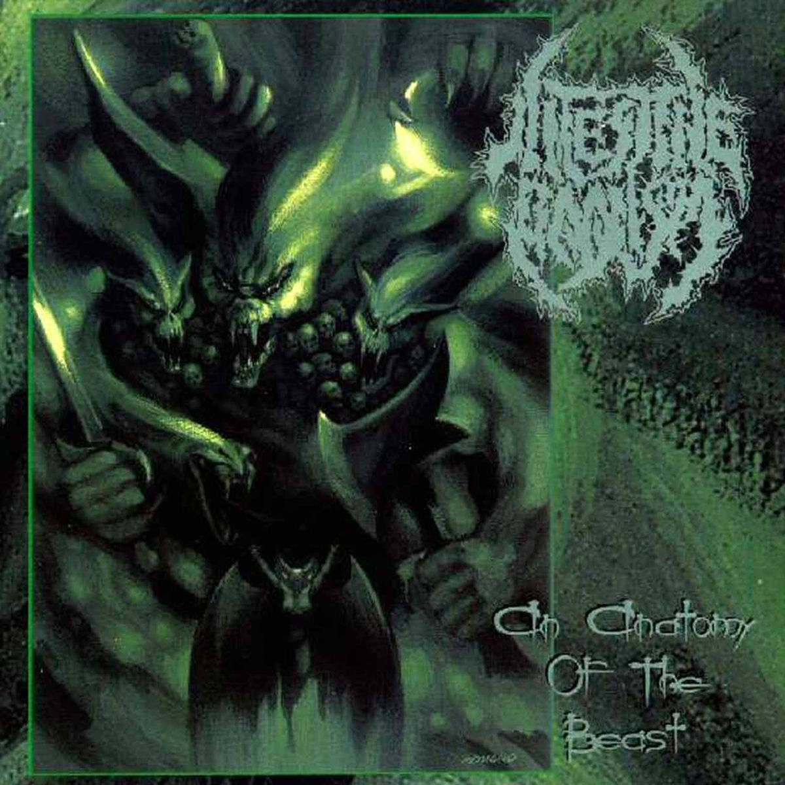
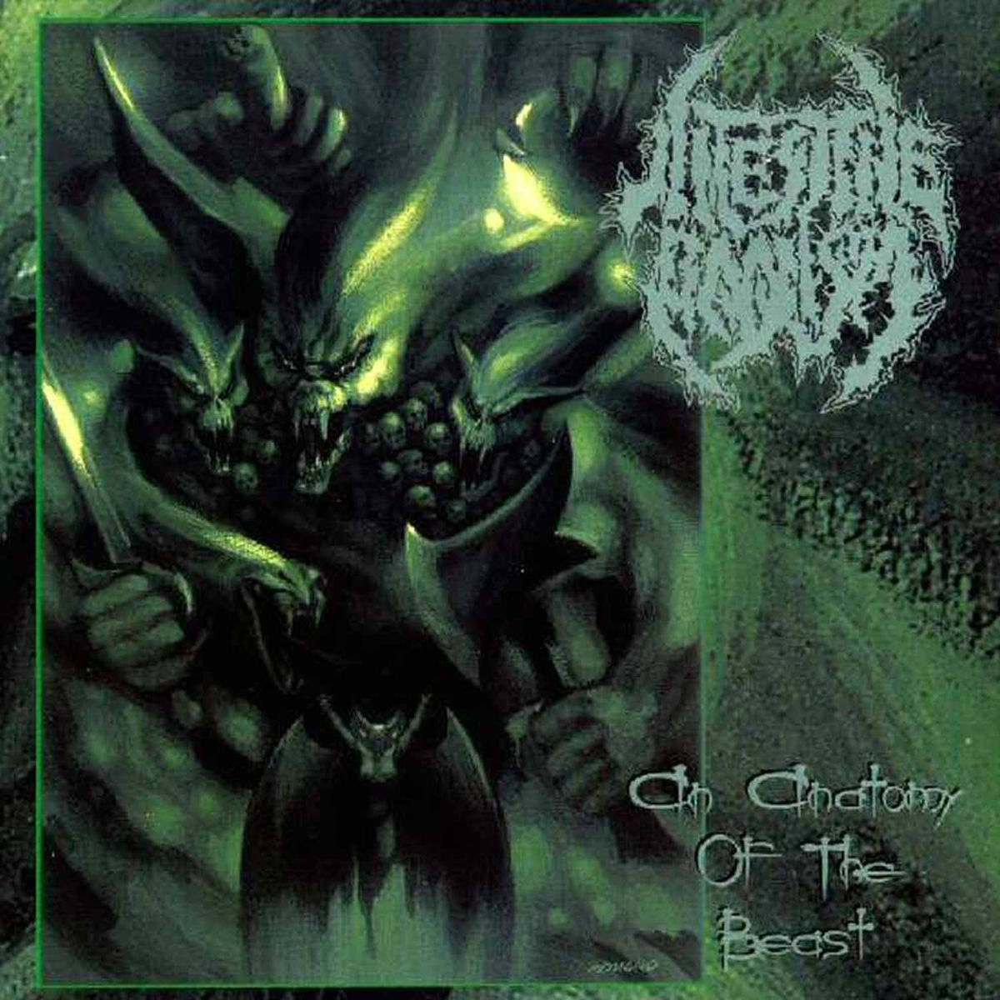
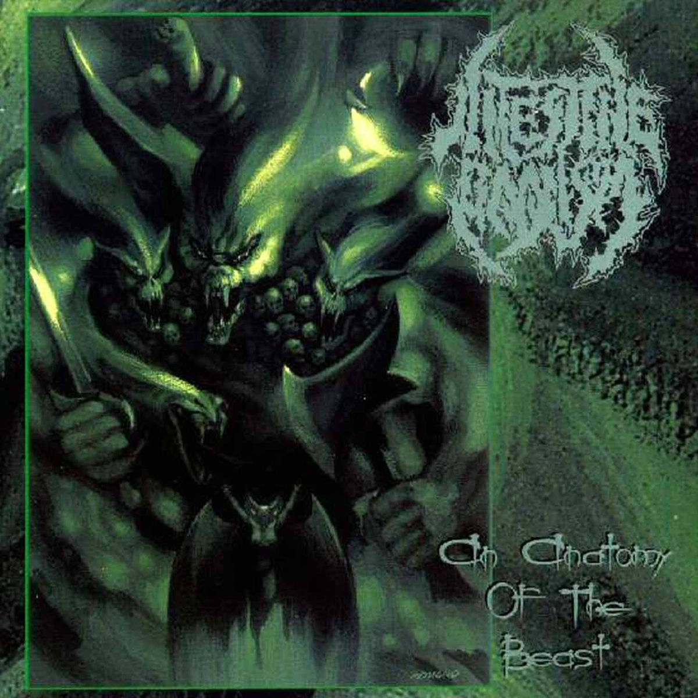

This page explores the various subgenres of Death Metal music.
Technical Death Metal is known for its complex song structures, intricate guitar work, and virtuosic musicianship. Bands like Dying Fetus and Necrophagist are notable in this subgenre.
Melodic Death Metal combines elements of traditional death metal with melodic riffs and harmonies. Bands like In Flames and Intestine Baalism are key figures in this subgenre.

Progressive Death Metal incorporates elements from progressive rock, featuring complex song structures, intricate rhythms, and a focus on atmosphere. Bands like Opeth and Gojira are notable in this subgenre.